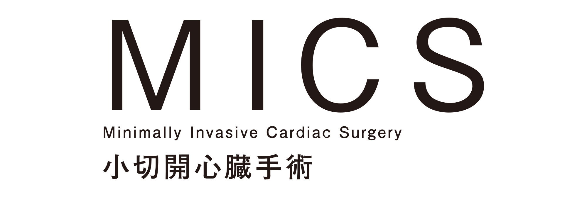

もどる
もどる
切開する範囲を最小限にとどめる低侵襲心臓手術
MICS（ミックス）とは
大きな胸骨正中切開で行う心臓手術を小さな切開で行う心臓手術のことで、英語の略語からMICS（ミックス）と呼ばれています。具体的には腋の下もしくは乳房の下を5-7cm切開して肋骨の隙間より心臓の手術を行います。従来、心臓の手術となると一般的に胸の真ん中にある胸骨という3-4cmの板状の骨を上から下まで20-30cmほど切開して、胸を大きく広げて心臓の手術を行ってきました。このアプローチ方法は心臓から大動脈に至るまで良好な視野が確保できるため、あらゆる手術に対応可能でスタンダードなアプローチであることは現在でも変わりません。しかし、現代はいかに患者さんのQOLを向上させるかを議論する時代に移っています。
従来の心臓手術

MICS（小切開心臓手術）
MICS（ミックス）のメリット
MICS（ミックス）では、胸骨を切らないため、出血が少なく、傷の感染のリスクもほとんどありません。また、一般的に胸骨正中切開の手術後は、自動車、自転車の運転や上半身を使う肉体労働や、テニスやゴルフなどのスポーツは、約２ヶ月間は控える必要があります。そのため多くの患者さんが２ヶ月間のうちに体力が低下し、結局、日常生活に戻るのに数ヶ月-半年かかることもあります。ミックス手術ではそのような運動制限がないため、早期リハビリが可能となり、早期社会復帰が可能になります。 傷が小さく美容面にも大変優れており、特に女性では、傷口が乳房に隠れる、ほとんど見えなくなるため、非常に満足度の高い手術です。
対象となる患者さん
MICSは、通常の正中切開での手術に比べ時間を要するため、患者さんへ負担とならない範囲で手術を行います。小切開のために安全な手術が少しでも危険性のあるものになることは避けなければなりません。そのためすべての患者さんに適応されるものではありません。患者さんの背景(年齢、生活様式、活動性、仕事など)や病状(重症度、動脈硬化の程度、肺の病気の有無など)、手術の内容を考慮し、患者さんとその御家族と十分に話し合い、安全性を確保し手術リスクが高くならない範囲で対応しています。 逆に、条件さえ整っていれば高齢者でもMICS（ミックス）は可能です。
冠動脈バイパスも小さな傷から
MICS-CABG手術とは小さな傷から心臓の血管にバイパス手術を数か所にわたり行う方法で、これまでは胸の真ん中を20-30cm大きく切開して、骨を切って行っていた手術ですが、骨を切らずに小さな傷で可能になりました。これまでも血管をつなぐ部位が心臓正面の1か所であれば可能な方法ではありましたが、道具や技術の進歩により心臓の側面や裏面の血管といった部位も含め、数か所の血管を1度に手術することが可能になりました。
担当医師の紹介
心臓血管外科 主任部長
大野 暢久
京都大学、トロント大学、兵庫県立尼崎総合医療センターを経て、26年ぶりに小倉へ戻ってまいりました。私たちの目指すところは、最高の治療を安全に遂行するために全力を尽くし、ひいては患者さんに大いなる安心をお届けすることです。これまでの多くの経験を生かし、強力なチームを作ってまいります。いつでもどのようなことでもご相談ください。
- 3学会構成心臓血管外科専門医認定機構
- 心臓血管外科専門医、修練指導医
- 日本外科学会 認定医、専門医、指導医
- 日本胸部外科学会 指導医
- 日本循環器学会
- 日本小児循環器学会
- 日本心臓血管外科学会
- 日本心臓弁膜症学会
- 日本低侵襲心臓手術学会
- 日本脈管学会
- 関西胸部外科学